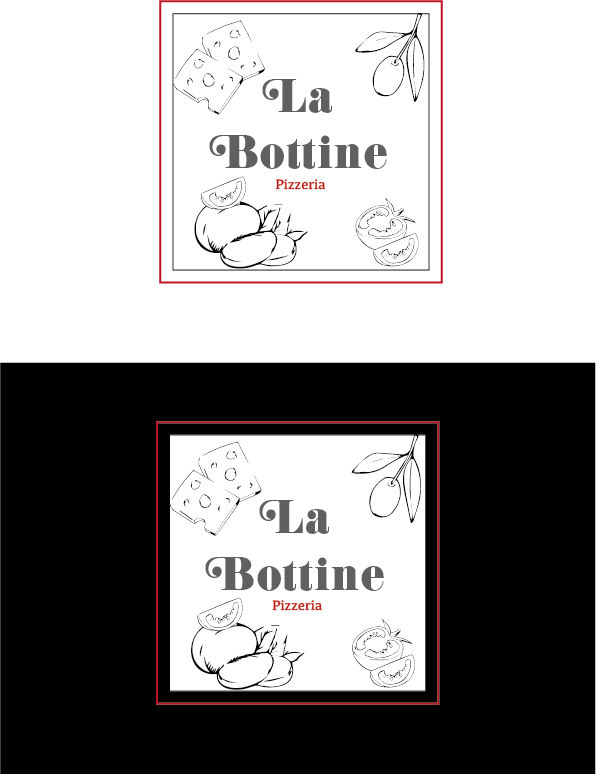

Mars 2025
Refonte du logo de la pizzeria La Bottine visant à refléter l’esprit italien et l’univers de la pizza. Le design combine une typographie chaleureuse et conviviale avec des encadrements rappelant les boîtes à pizza, agrémenté d’éléments graphiques (tomates, basilic, fromage) pour créer une identité visuelle moderne, authentique et immédiatement reconnaissable.
Illustrator
J’ai réalisé une refonte de logo pour une pizzeria nommée La Bottine, avec pour objectif de retranscrire à la fois l’esprit italien et l’univers de la pizza. Pour refléter l'identité italienne de la pizzeria, j’ai utilisé une typographie évoquant les codes visuels traditionnels italiens : ronde, chaleureuse et conviviale.
Le logo est structuré avec des encadrements rappelant ceux des boîtes à pizza, ce qui aide à renforcer l'association visuelle avec la restauration rapide et le plat emblématique. Autour du nom, j’ai disposé plusieurs ingrédients graphiques (tomates, feuilles de basilic, fromage, etc.) pour créer un univers visuel riche et immédiatement évocateur de la pizza. L’ensemble donne un rendu à la fois moderne et authentique, qui permet d’identifier rapidement le type d’établissement et son ancrage culturel.